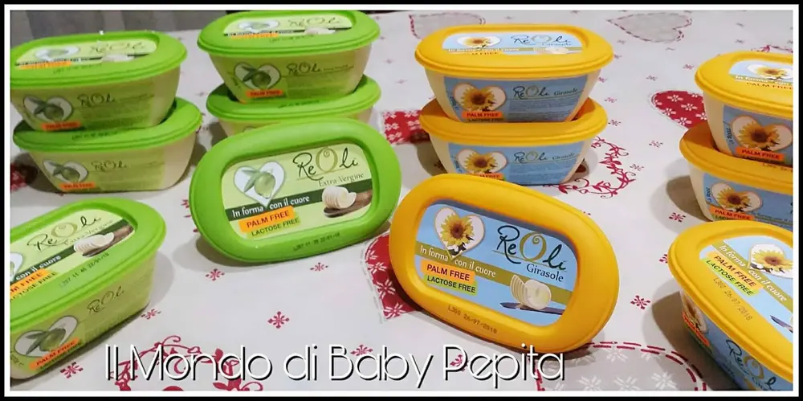
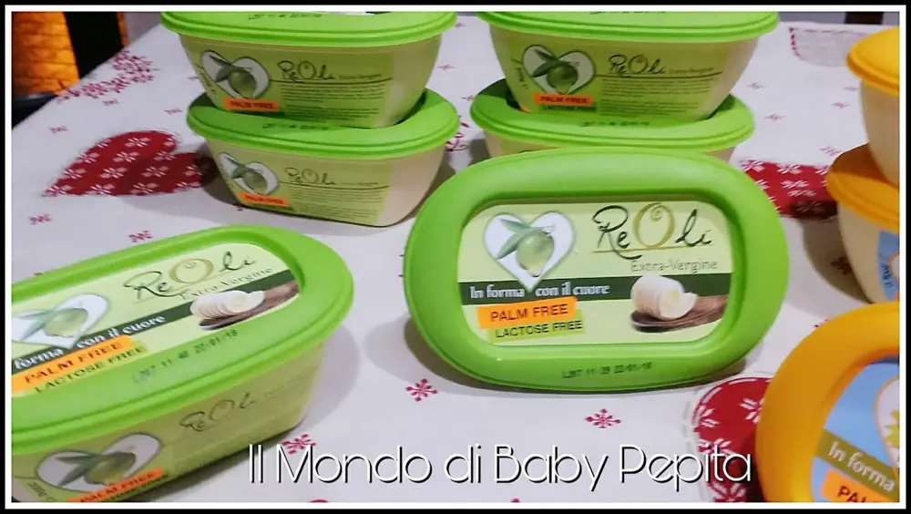
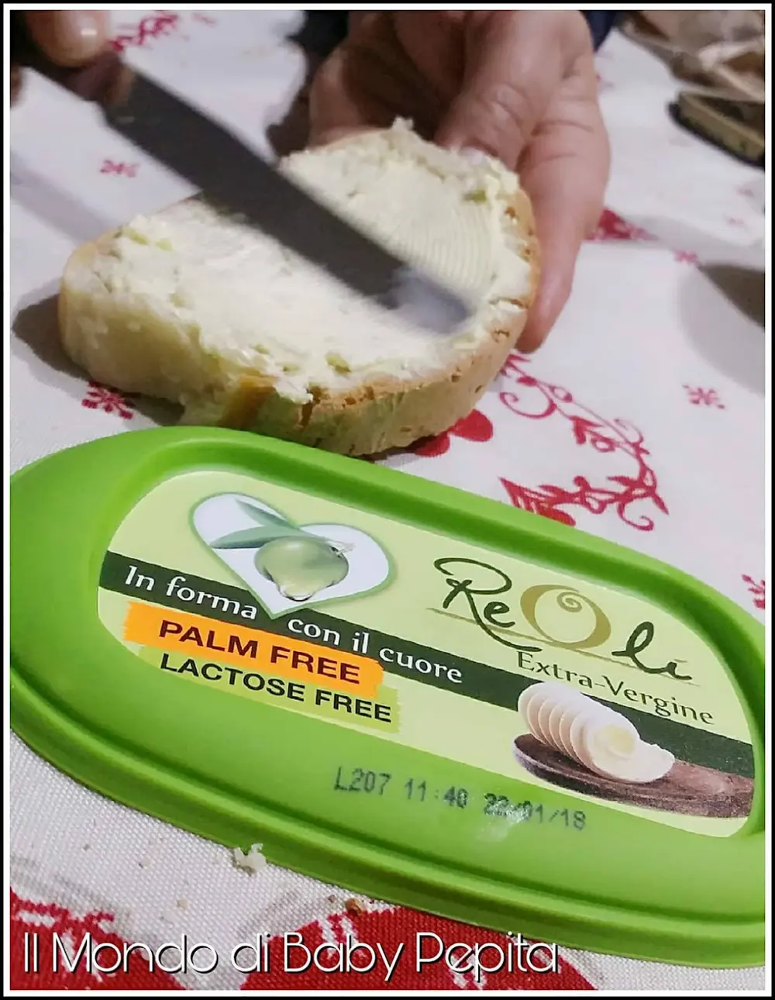
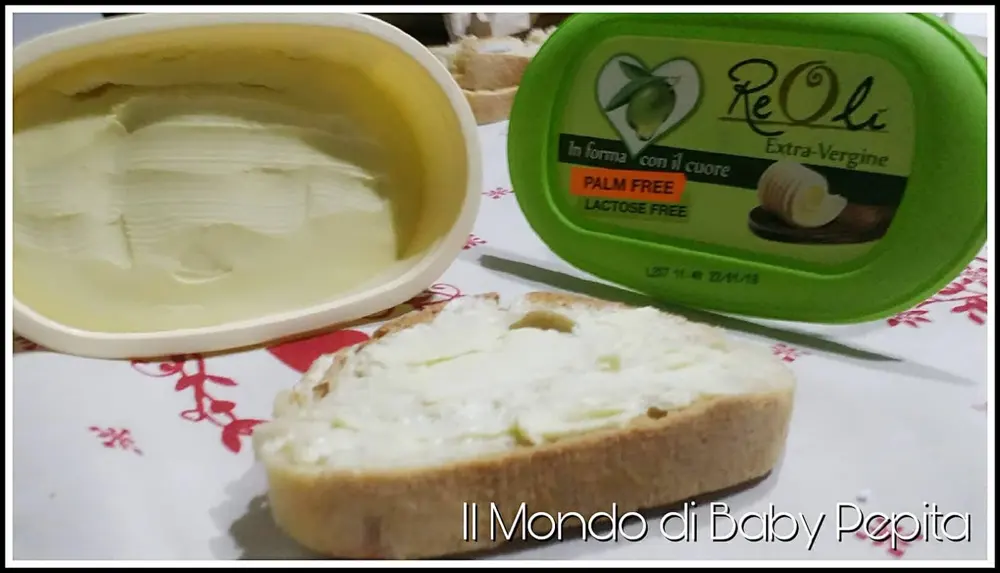
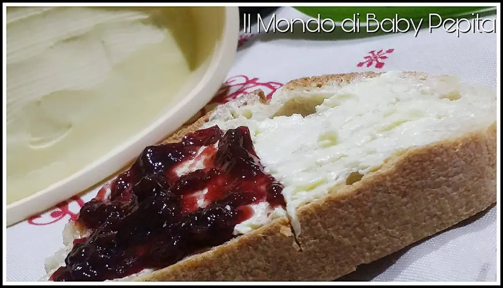
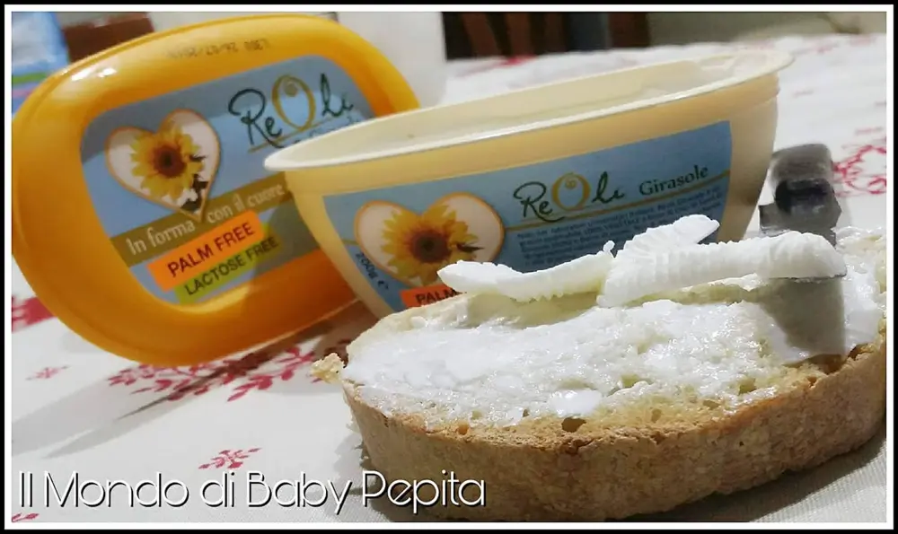
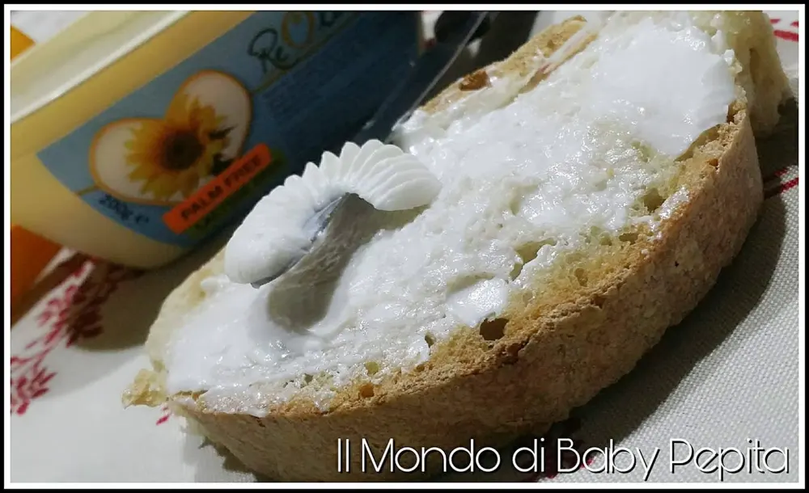

Burro e spalmabili REOLì
Burro: Siamo abituati a parlare di cose sane e Bio in questo blog. Oggi voglio presentarvi un prodotto genuino, la margarina e burro di REOLÌ.
Ideali per la creazione di torte sia dolci che salate, per condire la pasta, per la carne e verdure in padella o anche per fare l'occhio di bue.
Insomma è possibile creare tantissime ricette gustose ed in più è tranquillamente spalmabile anche da mangiare con marmellata, salumi, tonno.
È l'alternativa al solito burro o margarina in quanto è genuino quindi mangiare burro non è mai stato così salutare e senza colesterolo.

Esistono due versioni, quello all'olio extra vergine d'oliva e quello di semi di girasole.
REOLÌ ALL'EXTRA VERGINE DI OLIVA.

È in pratica il burro spalmabile a base di extra vergine di oliva, di cui mantiene tutte le riconosciute caratteristiche benefiche come i pochi grassi saturi.
Privo totalmente di lattosio e colesterolo animale.

Perfetto per condire ma anche da spalmare sul pane.


REOLÌ AI SEMI DI GIRASOLE.

Contiene tutta la delicatezza ed il gusto dell'olio di semi di girasole questa volta però in versione spalmabile.

Da usare nei tuoi condimenti in sostituzione dei grassi vegetali o animali. Dunque, usando reolì possiamo essere certi di mangiare sano e senza glutine, senza lattosio, senza colesterolo animale, senza coloranti, senza aromi, senza OGM, senza olio di palma e senza grassi idrogenati.
Con lo stess gusto del burro tradizionale ma con meno ingredienti che fanno male, ecco perché preferire REOLÌ al burro, strutto e margarina.